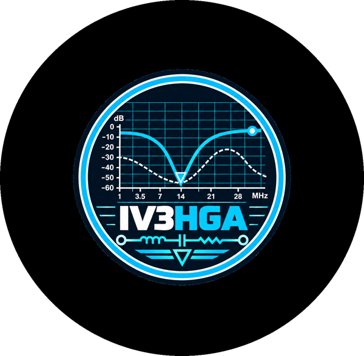
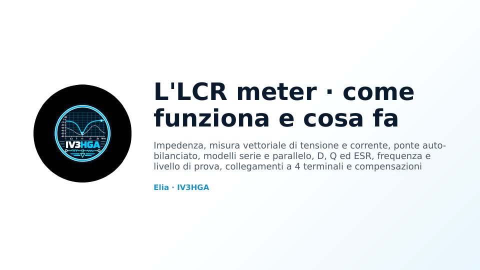
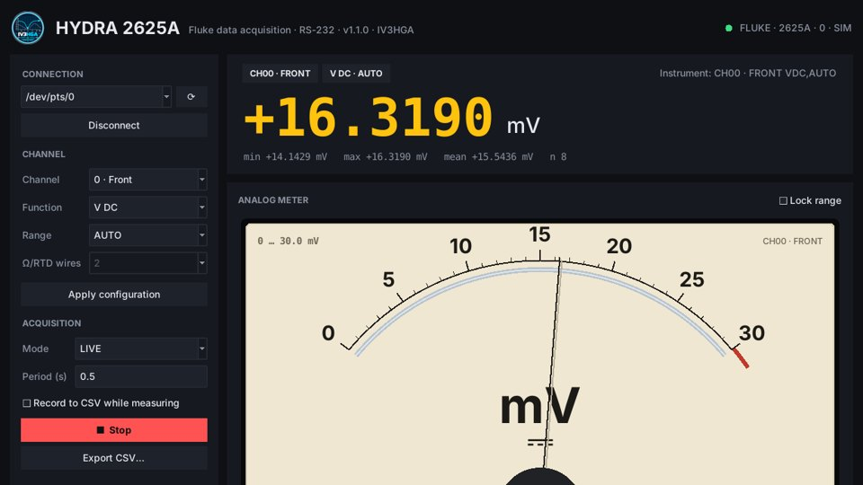

Pillole di elettronica e radiofrequenza per il laboratorio e la stazione: un corso con presentazioni gratuite e una raccolta di progetti, con il codice e i file per rifarli.

Questo sito vuole spiegare qualche concetto che ci può tornare utile nelle nostre attività di laboratorio e in stazione. La trattazione è pratica e non troppo accademica: si parte da quello che vediamo sul banco, con qualche pillola di teoria qua e là, quando serve a capire davvero cosa succede.
La matematica, per quanto possa apparire ostica, è il linguaggio universale che unisce ogni disciplina, permettendoci di descrivere, comprendere e interpretare il mondo attraverso un'unica forma di espressione, capace di superare ogni confine.

Un corso in pillole di elettronica e radiofrequenza per il laboratorio e la stazione: il multimetro e l'oscilloscopio, l'LCR meter, il VNA e la carta di Smith, l'analizzatore di spettro, il generatore e il wattmetro RF, e poi decibel, modulazioni, FT8, accesso multiplo, telefonia, rumore e correnti di modo comune.

Strumenti software e lavori di laboratorio di IV3HGA: progetti completi, con il codice su GitHub.
Un carico elettronico da banco open hardware: quattro canali a corrente costante da 5 A, fino a 60 V e 300 W, misura a 20 bit su ogni canale, protezioni in hardware indipendenti dal firmware e controllo WiFi con un ESP8266. Con il modello 3D della scheda e due approfondimenti animati sull'anello di corrente e sul calore.
ProgettoUn'interfaccia moderna per l'acquisitore Fluke Hydra 2620A / 2625A: lettura in grande, strumento analogico a bobina mobile, grafico, acquisizione su più canali e CSV. Con un ESP8266 diventa anche una pagina web, raggiungibile dal telefono, montata sul retro dello strumento con un supporto stampato in 3D.
Capitolo 3L'LCR meter: come misura impedenza, L, C, D, Q ed ESR, perché frequenza e livello contano; e il prova componenti FNIRSI LCR-P1 confrontato con un LCR meter HP.